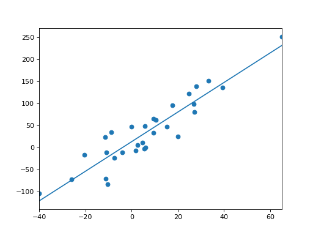

statsmodels.graphics.regressionplots.abline_plot¶
-
statsmodels.graphics.regressionplots.abline_plot(intercept=None, slope=None, horiz=None, vert=None, model_results=None, ax=None, **kwargs)[source]¶ Plots a line given an intercept and slope.
- interceptfloat
The intercept of the line
- slopefloat
The slope of the line
- horizfloat or array-like
Data for horizontal lines on the y-axis
- vertarray-like
Data for verterical lines on the x-axis
- model_resultsstatsmodels results instance
Any object that has a two-value params attribute. Assumed that it is (intercept, slope)
- axaxes, optional
Matplotlib axes instance
- kwargs
Options passed to matplotlib.pyplot.plt
- Returns
- figFigure
The figure given by ax.figure or a new instance.
Examples
>>> import numpy as np >>> import statsmodels.api as sm
>>> np.random.seed(12345) >>> X = sm.add_constant(np.random.normal(0, 20, size=30)) >>> y = np.dot(X, [25, 3.5]) + np.random.normal(0, 30, size=30) >>> mod = sm.OLS(y,X).fit() >>> fig = sm.graphics.abline_plot(model_results=mod) >>> ax = fig.axes[0] >>> ax.scatter(X[:,1], y) >>> ax.margins(.1) >>> import matplotlib.pyplot as plt >>> plt.show()
(Source code, png, hires.png, pdf)

{kind=link}
{kind=link}